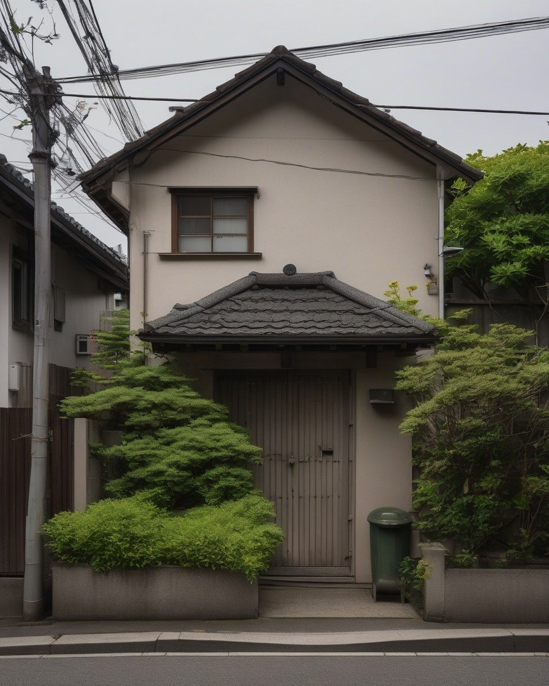
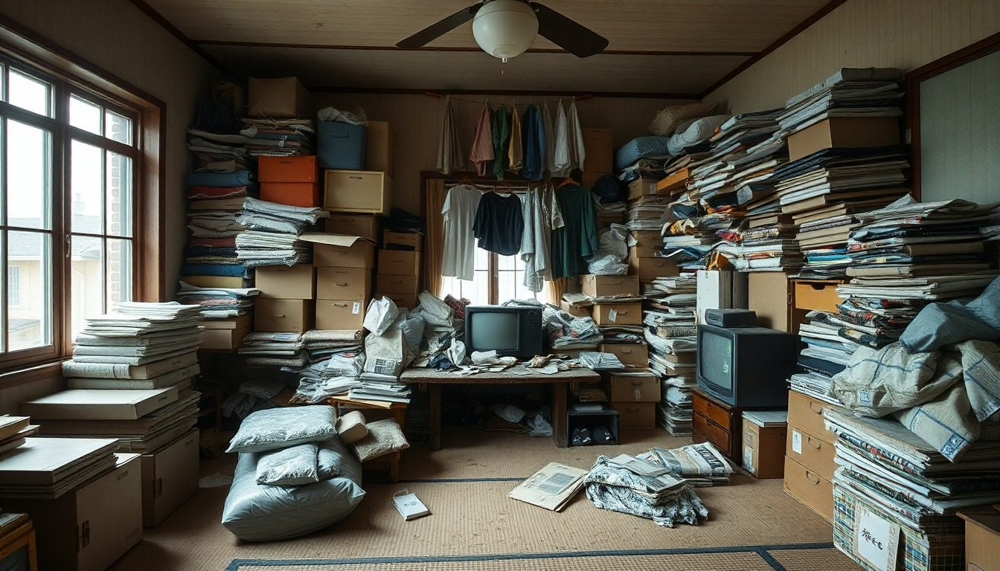
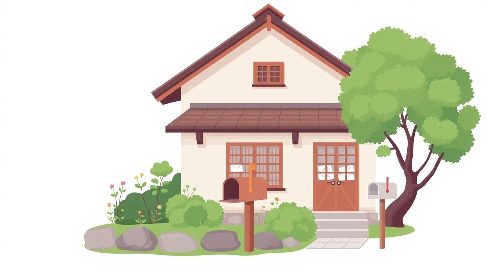

相続した実家を、売却・片付け・解体までまとめて手配します。家財が残ったままで大丈夫です。実家がどこにあっても、ご自身が遠くにお住まいでも。ご連絡は1〜2営業日で。
紹介は無料です。しつこい営業はしないよう、対応事業者と取り決めています。


急がせるつもりはありません。ただ、放置の代償は年ごとに大きくなります。順番だけは、先に決めておいてください。
ここまで読んで、胸が重くなった方へ。
片付けなくて、大丈夫。登記がまだでも、兄弟と話がついていなくても、遠くに住んでいても。今の状態のまま、相談は始められます。「何から手をつければいいか分からない」のところから、一緒に順番を決めます。
会社からあなたへ、営業の電話は行きません。断るときは、事務局が代わりに伝えます。

信頼できる会社に、大切なお客様をつなぐ窓口です。
こんなふうに進みます。
父が亡くなって3年、実家は家財がそのままです。片付けてからでないと相談できないと思っていました。
その後：実家のある市の会社2社に橋渡し。家財そのままで査定し、片付け費用ゼロの買取案と、片付けてから仲介で売る案を並べて比較。
兄弟と話が進みません。売るにしても、いくらになるか分からないと話ができない。
その後：査定額と3つの出口（買取・仲介・解体）の手取りを1枚にまとめて共有。合意のあと、仲介で売却へ。
建物が傷んでいて、解体しないと売れないと言われました。解体費を払ってまで売る価値があるのか、判断がつきません。
その後：現状買取と更地売却の2案を比較。解体は買主側で行う条件で、現状のまま買取に。
※ご相談の例です。個人が特定される内容は含みません。
先に費用を知っておくと、損をしません
同じ家でも、頼み方で手取りが変わります
1社に直接頼むと、その会社のやり方の値段しか出ません。案内所は、買取・仲介・解体の3つの出口を、最大3社の見積で並べます。
1社に直接頼むと「片付けてから」と言われ、先に数十万円を払う
案内所で並べると家財ごと買い取る会社も並べます。片付け費用ゼロの案と比べられます
1社に直接頼むと「解体しないと売れない」の一言で、100万円〜が先に出ていく
案内所で並べると現状のまま買う会社の額と、解体後の手取りを並べてから決められます
1社に直接頼むと仲介なら手数料がかかります。上限は売買価格の3%＋6万円＋税。800万円以下の物件は最大33万円（税込）まで認められています
案内所で並べると買取案は手数料ゼロ。仲介案と「手取り」で比べられます
1社に直接頼むと1社の言い値。高いか安いか分からない
案内所で並べると最大3社の見積で比較。断っても費用はかかりません
先に並べてから決める。それが、費用の面で損をしない順番です。
この順番で動くと、払わなくてよかった費用を先に払うことになります。
先に3つの出口（買取・仲介・解体）を並べてから決めるのが、損をしない順番です。
金額は一般的な目安です。地域と現地の見積で確定します。
実家じまいのご相談で、よく伺うお悩みです。
70代・女性・大阪在住
父が亡くなり、母も昨年他界しました。仏壇や写真、着物をどうすればいいのか分からず、片付けの手が止まっています。
40代・男性・千葉在住
登記もまだで、実家は空き家のまま。仕事があって実家に何度も帰れません。現地に行かずに進められるなら助かります。
60代・男性・実家から車で2時間
年に3回は帰って草を刈っています。近所の目も気になるし、そろそろ体がきつい。田舎なので、売りに出して買い手がつくのかも不安です。
50代・女性・神奈川在住
空き家のまま5年。役所から「適切に管理してください」という通知が届きました。何から手をつければいいのか分かりません。
※お悩みの例です。個人が特定される内容は含みません。
査定から引き渡しまで、買取なら1〜2か月、仲介なら3〜6か月が一般的な目安です。
期間は一般的な目安です。地域と買い手の状況で変わります。
全国。実家のある市区町村で現地を見られる会社を手配します。ご自身が遠くにお住まいでも、実家が離れた場所にあっても手配できます。
できます。名義が親のままだと売買はできませんが、相談と査定は先に始められます。2024年4月から相続登記は義務になっているので、順番の中に組み込みます。
できます。買い取る会社なら家財ごと引き受けることが多く、片付け費用がかからないこともあります。
査定の段階では不要なことが多いです。必要な場合は会社から事前にご相談します。
できます。費用の幅と手順が分かると話が進みやすくなります。実際の売買には相続人全員の合意が必要です。
当社への費用はかかりません。当社は対応した会社から紹介料を受け取ることがあります。お客様が払うのは、実際に依頼した片付けや解体の費用だけです。
しつこい営業はしないよう、対応事業者と取り決めています。断ったあとの連絡を止めたい場合は、当社にご連絡いただければ止めます。
実家のある地域で対応できる会社から、最大3社。会社名は連絡の前にお伝えします。
もちろんです。見積を見て納得できなければ、断って構いません。費用はかかりません。
1分で入力できます。実家のある地域で対応できる会社から、1〜2営業日を目安にご連絡します。
お電話の窓口は置いていません。担当が現地の会社と直接やり取りするため、フォームでいただいた方が早くご連絡できます。1〜2営業日でこちらからお電話します。